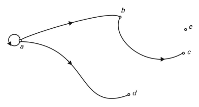
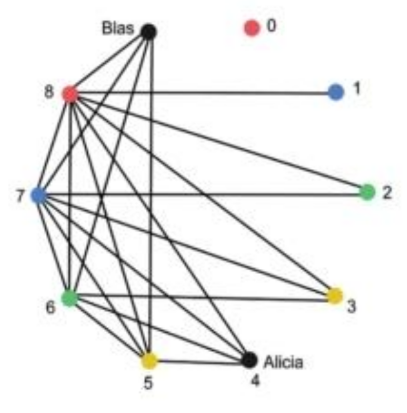
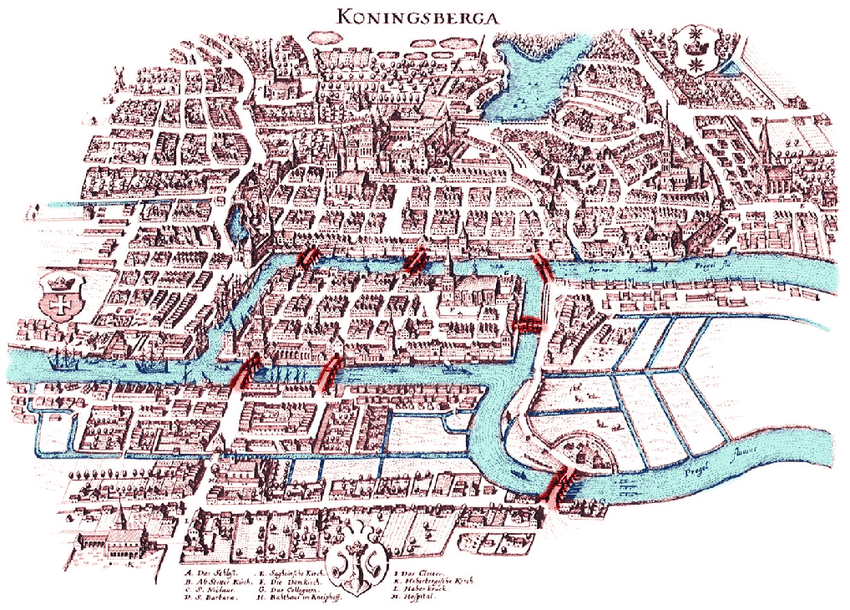

Los números felices se definen por el siguiente procedimiento: empezando con cualquier número entero positivo, se reemplaza el número por la suma de los cuadrados de sus dígitos, y se repite el proceso hasta que:
Se define como un conjunto de vértices o nodos y un conjunto de arcos que relacionan esos vértices. Por ejemplo este digrafo el conjunto de vértices sería \[V= \{a,b,c,d,e\}\] y el conjunto de arcos sería \[E = \{(a,a), (a,b), (a,d), (b,c)\}\]

Alicia y Blas son pareja y han quedado para cenar con otras cuatro parejas en un restaurante. Al llegar a la cena, todos llegan con su pareja y los asistentes se saludan al verse: algunos se dan cordialmente la mano, otros se saludan con dos besos (Evidentemente, los miembros de las parejas no se saludan). Tras los postres, Blas propone a sus nueve compañeros de mesa que escriban en un trocito de papel a cuántas personas les dieron la mano al llegar al restaurante. Recordemos que todos se saludaron, pero usaron dos tipos de saludo: mano o besos. Los compañeros acceden y le dan a Blas los nueve papelitos, cada uno con un número: el número de personas a las que saludaron con un apretón de manos al llegar. Blas, sin abrirlos, los mezcla y después los abre y los coloca sobre la mesa. Casualmente, las nueve respuestas son distintas, no se repite ningún número. La pregunta que te hago es la siguiente: ¿a cuánta gente le dio la mano Alicia al llegar?

El grado o valencia de un nodo es el número de aristas que llegan al nodo. Por ejemplo en el grafo anterior el grado del nodo blas es 4.
Dibuja varios grafos y suma las valencias de sus nodos. ¿Esa suma es siempre par?¿Se puede calcualar el resultado de la suma de otra forma?
\[\sum_{n \in N} d(n) = 2 \cdot |A|\]
Son aquellos grafos que pueden tener más de una arista entre un par de nodos.
Un camino es una sucesión de nodos y aristas.
Conjunto de números ordenador en \[m\] filas y \[n\] columnas
\[ \begin{pmatrix} a_{11} & a_{12} & \cdots & a_{1n} \\ a_{21} & a_{22} & \cdots & a_{2n} \\ \vdots & \vdots & \ddots & \vdots \\ a_{m1} & a_{m2} & \cdots & a_{mn} \end{pmatrix}\]
El elemento \[a_{ij}\] es el elemento de la fila \[i\] y columna \[j\].
Dado un grafo de n nodos, la matriz de adyacencia de un grafo es una matriz de tamaño \[n\times n\] donde cada valor \[m_{i,j}\] indica el número de aristas que unen el nodo \[i\] con el nodo \[j\].

El problema de los 7 puentes de Königsberg consiste en encontrar un camino que recorra los 7 puentes sin recorrer ninguno.
1 La imagen anterior representa la disposición de los puentes de Königsberg en la é poca de Euler.
Un ciclo euleriano es un camino cerrado (inicio y final coinciden) en el que se recorren todas las aristas de un grafo sin repetir ninguna.
Para que un grafo admita un ciclo euleriano, todos sus nodos/vértices deben tener grado par.
Un camino euleriano es cun camino abierto en el que se recorren todas las aristas sin repetir ninguna.
Para que un grafo admita un camino euleriano, como máximo debe tener 2 nodos/vértices con grado impar.